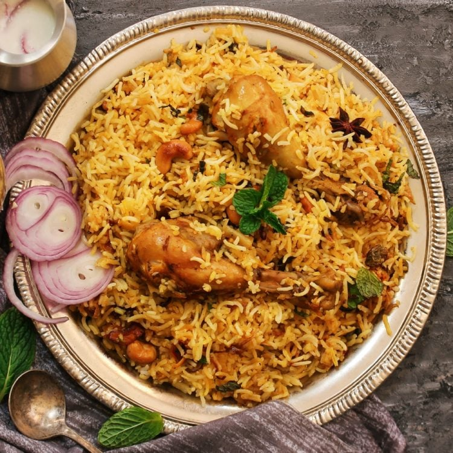

Biryani

Description
Biryani is a flavorful and aromatic rice dish that originated in the Indian subcontinent. It is made with
fragrant long-grain Basmati rice, meat (such as chicken, mutton, or fish), and a blend of spices. Biryani is
known for its rich taste and the combination of tender meat and perfectly cooked rice.
Ingredients
- 2 cups Basmati rice
- 500 grams chicken, mutton, or fish (cut into pieces)
- 2 onions, thinly sliced
- 4 tomatoes, chopped
- 1/2 cup plain yogurt
- 2 tablespoons biryani masala powder
- 1 tablespoon ginger-garlic paste
- 1 teaspoon turmeric powder
- 1 teaspoon red chili powder
- 1/2 cup chopped mint leaves
- 1/2 cup chopped coriander leaves
- 4 cups water
- 1/4 cup ghee or vegetable oil
- Salt to taste
- Saffron strands (optional) soaked in 2 tablespoons of milk
Steps
- Cook the meat: Sauté onions, ginger-garlic paste, and tomatoes. Add the meat, spices, and yogurt. Cook until the
meat is browned
- Parboil the rice: Soak and drain the Basmati rice. Boil the rice until 70% cooked. Drain and set aside
- Layer the biryani: In a large oven-safe dish or deep pan, layer half of the parboiled rice. Spread the meat
mixture evenly over the rice. Add the remaining rice as the top layer
- Infuse flavors: Drizzle saffron-infused milk over the rice for an aromatic touch
- Cook the biryani: Cover the dish tightly with foil or a lid. Cook on low heat for 25-30 minutes until the rice
is fully cooked and flavors meld together
- Garnish and serve: Remove the lid, fluff the rice gently, and garnish with fried onions. Serve hot with raita or
salan